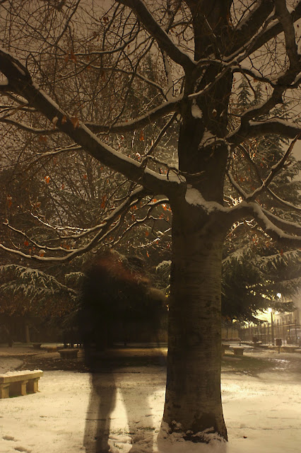
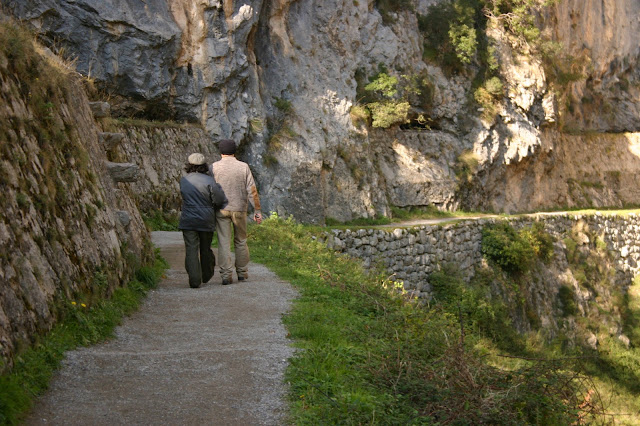
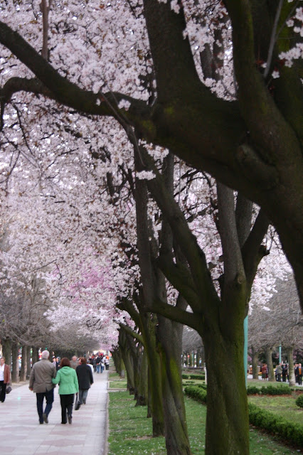

Dímelo con tus manos
-->
Dímelo con tus manos
calladas como las nubes por el cielo,
silenciosas como los rayos de sol
que nos envuelven la piel.
Entreábremelas muy despacio,
esas tus palmas, pausadas estrellas
que no se acaban, ni se gastan,
ni se van, amor.
Entreábremelas y bésame con ellas
las manos mías.
Porque no hay beso más sincero
que ese nuestro de una yema
posada en una palma.
Verás como no hace falta más
que sostener tu carita fina
con mis enamoradas manos
para comprender que ellas
no saben mentir,
que no entienden de promesas ni de planes
si no que hacen y dan
y se dejan dar, reciben caricias
y guardan secretos de papel o pequeños latidos.
Así, las manos desnudas
sin pinturas, ni relojes ni anillos ya,
los cuales atan nada más
a un nombre, a una hora
o a alguna apariencia disfrazada,
nos las podremos colmar de tacto
y de sincera materia.
Por eso, al abrir los ojos
podremos verlas, al fin, amor,
llenas.
Gerona, 19 de mayo de 2008.
Para quienes aman, y para los que están dispuestos a hacerlo.



Más aquí adentro:
http://delightfulobservaciones.blogspot.co.uk/2013/01/el-angel-de-comillas.html
http://delightfulobservaciones.blogspot.co.uk/2012/12/sus-zapatos-traen-polvo-de-otros-caminos.html
http://delightfulobservaciones.blogspot.co.uk/2012/05/desayuno-cantabrico.html
http://delightfulobservaciones.blogspot.co.uk/2013/02/sueno-desde-el-puente-de-brooklyn.html